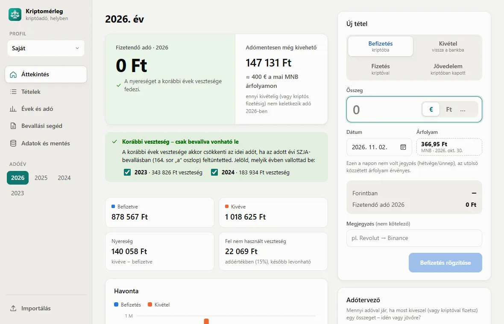
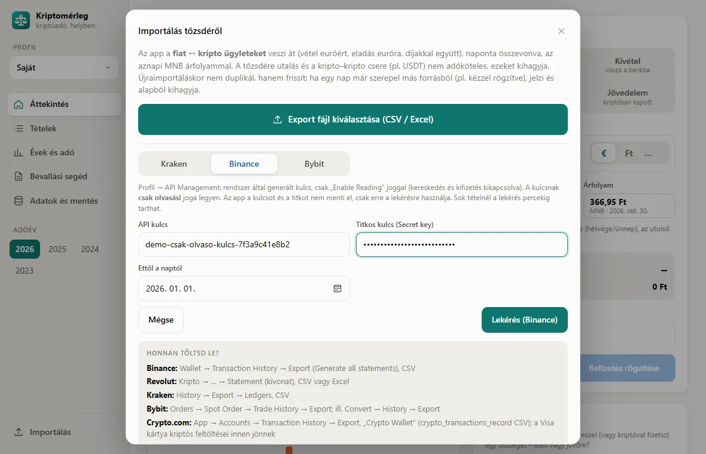
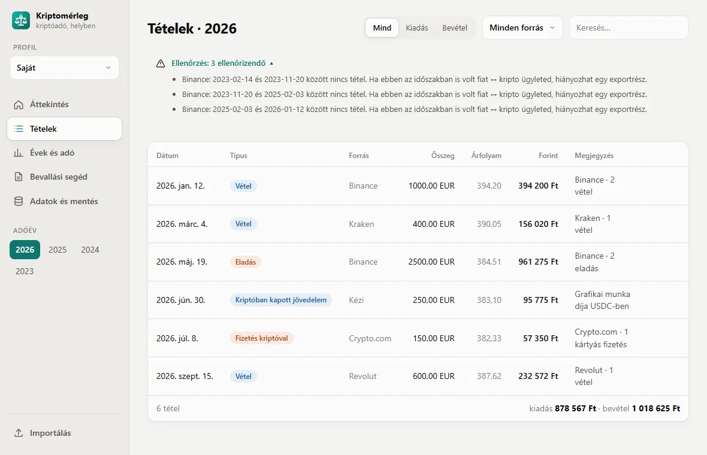
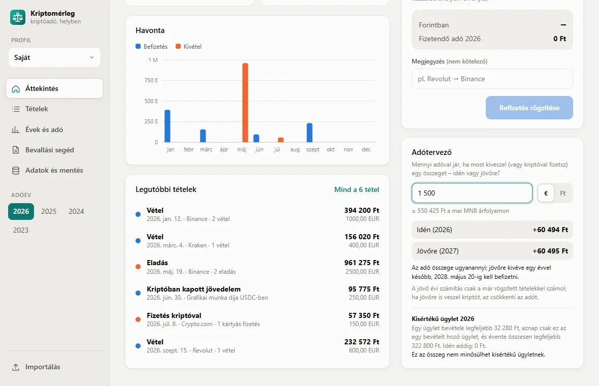
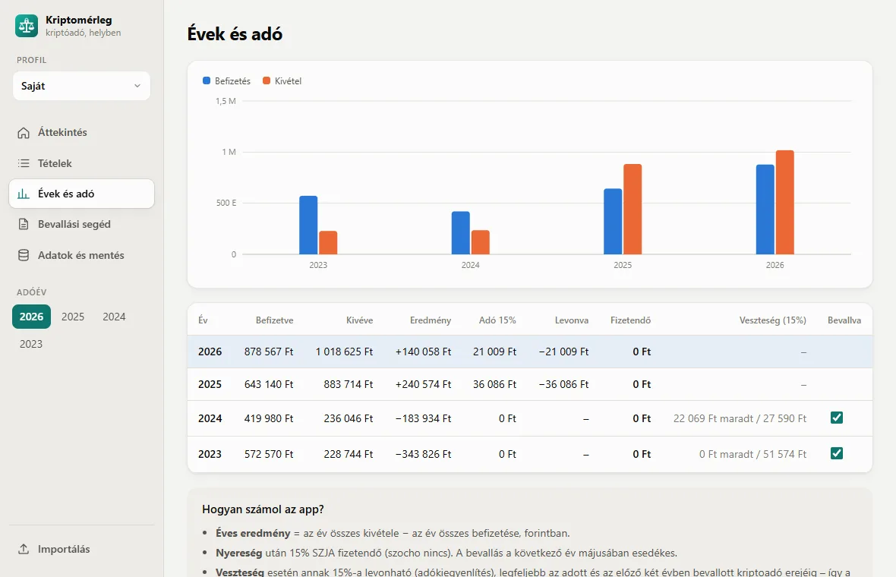
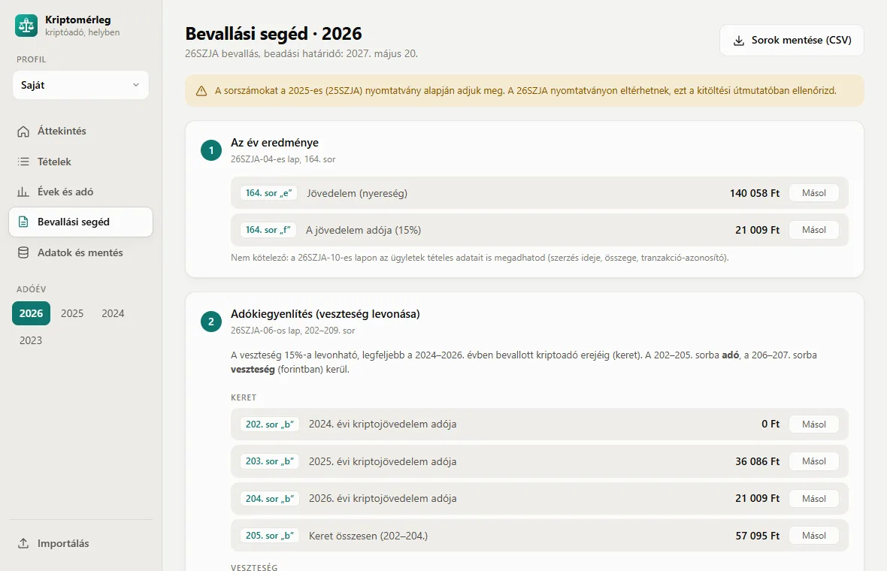
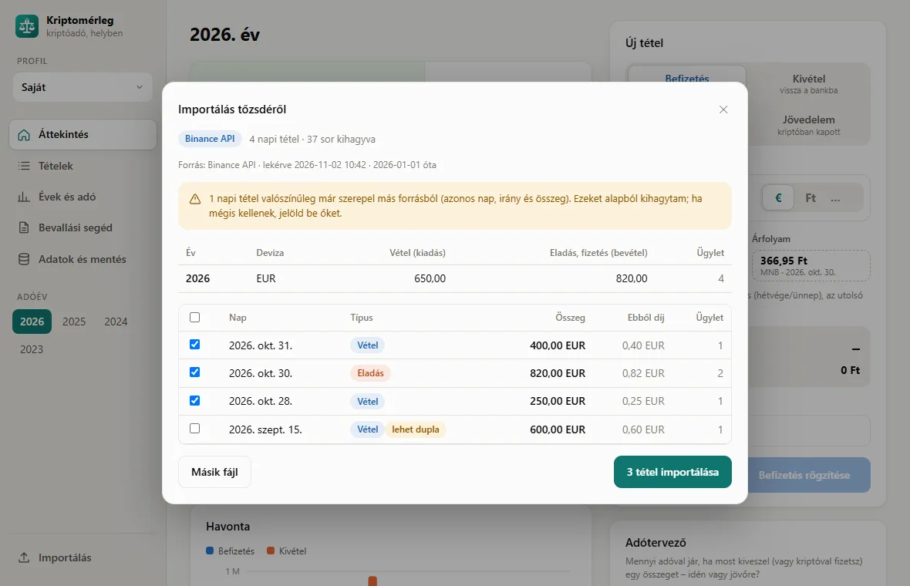
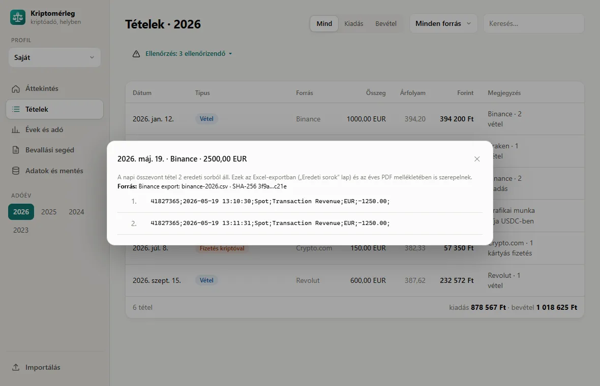
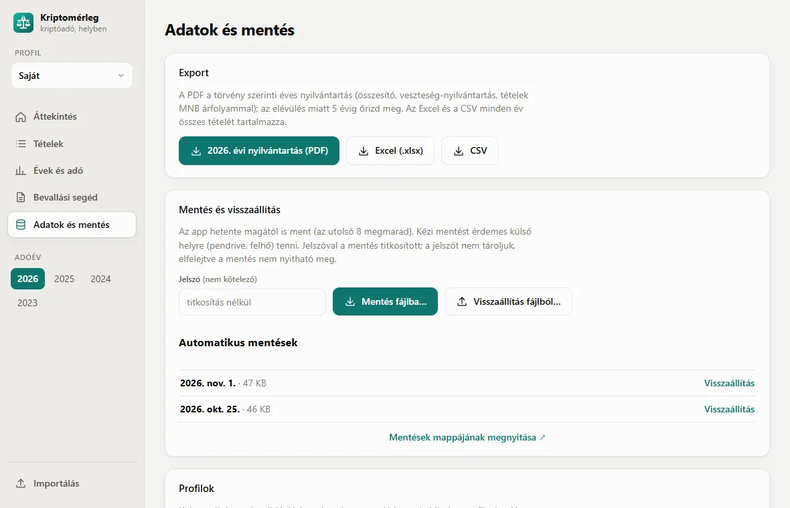

Kriptó adó kalkulátor · SZJA · NAV bevallásA kriptóadód,
a saját gépeden.
A Kriptomérleg MNB árfolyamon kiszámolja a 15%-os kriptóadót, beolvassa a tőzsdei exportjaidat, és megmutatja, mit hova írj a NAV-bevallásban. Nincs regisztráció és nincs felhő: minden adat nálad marad.
Windows · Linux · NixOS — ingyenes béta
- A magyar szabályokra készült: 15% SZJA, adókiegyenlítés, kisértékű ügylet
- Megmondja, mit írj a 164. sorba és a 06-os lapra
- Ingyenes, nyílt forráskódú, fiók nélkül

Nincs regisztráció
Nem kér e-mail címet vagy jelszót. Letöltöd, és már használhatod is. Tőzsdei API-kulcs csak akkor kell, ha az API-s lekérést választod (Binance, Bybit, Kraken), és azt sem menti el.
Minden a gépeden
A tranzakcióid helyi fájlban vannak, profilonként külön. Nincs szerver, ahol kiszivároghatnának. A mentés jelszóval titkosítható.
Csak az MNB-vel beszél
Hálózatra csak a hivatalos árfolyamért és a frissítések kereséséért megy (ez kikapcsolható). Árfolyamot kézzel is megadhatsz.
Így néz ki a gyakorlatban
Valódi képernyőképek az appból, bemutató adatokkal. Kattints bármelyikre a nagyításhoz.
Fájlból, vagy közvetlenül a tőzsdéről
Töltsd be a Binance, Revolut, Kraken, Bybit vagy Crypto.com exportját, vagy kérd le az ügyleteket csak olvasó API-kulccsal. Az app csak a fiat ↔ kripto ügyleteket veszi át, napra összevonva, díjakkal.
- Binance, Bybit és Kraken API: a kulcsot nem menti el
- Előnézet importálás előtt; a más forrásból már meglévő napot alapból kihagyja
- Bankszámlakivonat és saját Excel-táblázat is

Szól, ha valami hiányzik
A Tételek oldal jelzi a hézagos importot, a dupla tételt, a vétel nélküli eladást, és ha banki és tőzsdei forrás ugyanazt az évet fedi. Minden importált tétel mögött megmaradnak az eredeti sorok.
- Szűrés irány, forrás és szöveg szerint
- Eredeti sorok és a forrásfájl SHA-256 ujjlenyomata egy kattintásra
- Újraimportáláskor frissít, nem duplikál

Idén vedd ki, vagy jövőre?
Írd be, mennyit vennél ki, és az app megmutatja, mennyi adóval jár idén és mennyivel jövőre, a korábbi veszteségeiddel együtt. Azt is látod, belefér-e a kisértékű ügylet keretébe.
- Adómentesen még kivehető összeg forintban és euróban
- Élő adóhatás minden új tételnél, még rögzítés előtt
- Havi bontás grafikonon

Minden év egy helyen
Évenként a befizetés, a kivétel, az eredmény és az adó, grafikonon és táblázatban. A veszteségből megmaradt keretet és az adókiegyenlítést a 2025-ös törvényváltozás szerint számolja.
- Jelölöd, melyik évi veszteséget vallottad be
- Önellenőrzés-segéd, ha egy veszteség kimaradt
- A 2022 előtti tételek a 2022-es évbe számítanak

Soronként, mit hova írj
A segéd kiírja a 164. sor és a 06-os lap 202–209. sorának értékeit, „Másol” gombbal. A kitöltendő sorokat CSV-be, az éves nyilvántartást PDF-be mentheted.
- A beadási határidő és a nyomtatványváltozások jelzése
- PDF nyilvántartás, mellékletben az eredeti sorokkal
- Excel és CSV export

További képek



A képeken kitalált bemutató adatok szerepelnek; a számokat az app valódi adószámítása állította elő.
Minden, ami a magyar kriptóbevalláshoz kell
Kifejezetten a magyar szabályokra készült, nem egy átírt külföldi riport.
MNB árfolyam automatikusan
Az euró-, dollár-, font- vagy frankösszeget a teljesítés napjának hivatalos árfolyamán számolja át. Hétvégén és ünnepnap az utolsó közzétett árfolyamot használja.
Tőzsdei és banki import
Beolvassa a Binance, Revolut, Kraken, Bybit és Crypto.com exportját és a bankszámlakivonatot; a Binance, a Bybit és a Kraken ügyleteit csak olvasó API-kulccsal is lekéri. Csak a fiat ↔ kripto ügyleteket veszi át, díjakkal, és minden tétel mögött megőrzi az eredeti sorokat.
Bevallási segéd
Megmutatja, mi kerül a 164. sorba és a 06-os lap 202–209. sorába, „Másol” gombbal. Ha egy korábbi év vesztesége kimaradt, megmondja, hol pótold, és mennyit ér.
Adókiegyenlítés, 2025-ös szabály
A veszteség nem évül el, és az előző két évben befizetett adóból vissza is hozhat. A számítás követi a 2025-ös törvényváltozást.
Élő adóhatás és adótervező
Rögzítés előtt látod, mennyivel változik az idei adód, és mennyit vehetsz még ki adómentesen, euróban is. Az adótervező megmutatja, idén vagy jövőre kedvezőbb-e egy kivétel, és belefér-e a kisértékű keretbe.
Windows, Linux, NixOS
Kis méretű natív app (Tauri). Van Windows-telepítő és hordozható exe, Linuxra .deb és AppImage, valamint Nix flake. Az új verziót magától felajánlja.
Nyilvántartás PDF-ben
A törvény szerinti éves nyilvántartás egy kattintással: összesítő, veszteség-nyilvántartás és minden tétel MNB árfolyammal. Excel és CSV export is van.
Mentés és profilok
Heti automatikus mentés, mentés fájlba jelszavas titkosítással, visszaállítás. Külön profil a házastársnak vagy a családtagoknak.
Határidő-emlékeztető
Március 15. és május 20. között szól, ha az előző évre kriptoadó, visszajáró adó vagy bevallandó veszteség van.
Minden funkció részletesen
Rögzítés
- Befizetés, kivétel és fizetés kriptóval (áru, szolgáltatás – bevételnek számít)
- Kriptóban kapott jövedelem (bér, ellenérték): a már adózott érték kiadásnak számít, nem adózol rá kétszer
- Deviza: euró, dollár, font, svájci frank vagy forint
- MNB-árfolyam automatikusan a teljesítés napjára; hétvégén az utolsó közzétett
- Kézi árfolyam a banki bizonylatról
- Ezres tagolás gépelés közben; a mínusz jel kivételt jelent
- Rögzítés előtt látod, mennyivel változik az évi adó
Adószámítás
- 15% SZJA az éves eredmény után (Szja tv. 67/C. §), szocho nélkül
- Adókiegyenlítés a korábbi évek bevallott veszteségével, a 2025-ös szabály szerint időkorlát nélkül
- Évenként jelölöd, melyik évi veszteséget vallottad be
- 2022 előtti tételek a 2022-es évbe számítanak (NAV-álláspont)
- Kisértékű ügyletek kihagyása bekapcsolható (minimálbér 10%-áig)
- Adómentesen még kivehető összeg forintban és euróban
- Adótervező: mennyi adó, ha idén vagy ha jövőre veszed ki, és belefér-e a kisértékű keretbe
Bevallás
- Bevallási segéd: 164. sor, 06-os lap 202–209. sor, C lap 75. sor, „Másol” gombbal
- Kitöltendő sorok mentése CSV-be
- Önellenőrzés-segéd: melyik évi bevallásban pótold a kimaradt veszteséget, és mennyit ér
- Határidő-emlékeztető március 15. és május 20. között, rendszerértesítéssel
- Évek és adó: évenkénti táblázat és grafikon
Import
- Binance, Revolut (régi és új kivonat), Kraken, Bybit (spot és Convert), Crypto.com exportja
- Binance, Bybit és Kraken közvetlenül, csak olvasó API-kulccsal (a kulcsot nem menti)
- Kriptokártyás fizetés: a Crypto.com Visa kártya kriptós feltöltése „Fizetés kriptóval” tételként
- Bankszámlakivonat (Revolut, Wise, magyar bankok): tőzsdére küldött és onnan érkező utalások
- Régi, saját Excel-táblázat évenkénti lapokkal
- Naponta összevonva, díjakkal; újraimportáláskor frissít, a más forrásból már meglévő napot jelzi
- Ügyletszintű nyomkövetés: a napi tétel mögött megmaradnak az eredeti sorok és a forrásfájl SHA-256 ujjlenyomata (Excelben és a PDF mellékletében is)
- Ellenőrzés: jelzi a vétel nélküli kivételt, a dupla tételt, a banki és tőzsdei forrás átfedését és a hézagos importot
Export és mentés
- Éves kriptoeszköz-nyilvántartás PDF-ben (összesítő, veszteség-nyilvántartás, tételek)
- Excel (.xlsx) és CSV export
- Mentés fájlba, jelszóval titkosítva is; visszaállítás egy kattintással
- Heti automatikus mentés, az utolsó 8 megmarad
- Több profil: külön nyilvántartás a családtagoknak
Az app
- Windows-telepítő és hordozható exe, Linux .deb és AppImage, NixOS flake
- Automatikus frissítés aláírt csomagokkal
- Minden adat a gépeden, SQLite-ban; nincs fiók, nincs felhő
- Sötét és világos mód
- Nyílt forráskód a GitHubon
Három lépés a bevallásig
Rögzíts vagy importálj
Írd be, mennyit váltottál kriptóra vagy vissza (euróban, dollárban, fontban, frankban vagy forintban), mit fizettél kriptóval, vagy töltsd be a tőzsdei exportot, illetve a bankszámlakivonatot.
Nézd meg az adót
Az app évenként kiszámolja az eredményt, a 15%-os adót és a levonható veszteséget, MNB árfolyamon.
Másold át a NAV-ba
A Bevallási segéd soronként megmutatja, mit kell beírni az eSZJA felületen, és egy kattintással másolhatod a számokat. Az éves nyilvántartást PDF-ben eltárolhatod.
A kriptós adataid a te dolgod
A tranzakciós előzményeid elárulják, mennyi a vagyonod. Ezt nem kell egy újabb online fiókra bíznod.
| Kriptomérleg | Tipikus webes kriptóadó-szolgáltatás | |
|---|---|---|
| Hol vannak az adataid? | ● A saját gépeden, egy fájlban | A szolgáltató szerverén |
| Regisztráció | Nem kell | E-mail, jelszó, gyakran API-kulcs |
| Ha a szolgáltatás megszűnik | Az app és az adataid megmaradnak | Az adatokat ki kell menteni |
| Biztonsági mentés | Heti automatikus mentés, titkosítható mentésfájl, Excel / CSV / PDF export | Attól függ, mit enged az export |
| Ár | Ingyenes béta | Jellemzően adóévenként vagy előfizetéssel fizetős |
Töltsd le ingyen
Mindig a legfrissebb verzió. Korábbi kiadások és a változások listája: összes kiadás.
Windows
Windows 10 és 11, 64 bites. A telepítő Start menü-ikont is létrehoz.
Linux
Debian és Ubuntu alapú rendszerekre .deb, bármely más disztróra AppImage.
NixOS
Nix flake: futtatás telepítés nélkül, vagy felvétel a rendszerkonfigurációba.
nix run github:adamgyongyosi/kriptomerleg
A Windows SmartScreen az első indításkor figyelmeztethet („Ismeretlen kiadó”), mert a telepítő még nincs digitálisan aláírva. Ilyenkor: További információ → Futtatás mindenképp.
Gyakori kérdések
Mennyi a kriptó adó Magyarországon?
A kriptoeszközökből származó jövedelem után 15% személyi jövedelemadót kell fizetni (Szja tv. 67/C. §), szociális hozzájárulási adó nincs. A jövedelem az év összes ügyleti bevételének és ügyleti kiadásának különbsége, forintban: amit kriptóból forintra, euróra vagy árura váltottál, mínusz amit kriptóra költöttél, díjakkal együtt.
Adóköteles a kripto–kripto csere?
Nem. Adóköteles ügylet csak akkor keletkezik, ha a kriptoeszközt törvényes fizetőeszközre (forint, euró stb.) váltod, vagy árut, szolgáltatást fizetsz vele. A kriptoeszközök egymás közötti cseréje, például BTC → ETH vagy USDT → SOL, nem adóköteles.
Mikor és hol kell bevallani a kriptó adót?
Az éves SZJA-bevallásban (például a 2025-ös évről a 25SZJA nyomtatványon), a 04-es lap 164. sorában. A bevallás és a befizetés határideje a következő év május 20. Az eSZJA bevallási tervezet a kriptós adatokat nem tartalmazza, ezért azt neked kell kiegészítened.
Mi az adókiegyenlítés, és levonható a kriptós veszteség?
Igen, adókiegyenlítés formájában: a veszteség 15%-a érvényesíthető, legfeljebb az adott évben és az előző két évben bevallott kriptoadó erejéig (06-os lap 202–209. sor). Feltétel, hogy a veszteséget a keletkezése évének bevallásában feltüntesd. A 2025-ös bevallástól a korábbi évek bevallott vesztesége időkorlát nélkül figyelembe vehető (2025. évi LXXXIII. törvény).
Kell adózni, ha még nem váltottam vissza forintra?
Amíg a kriptó kriptó marad, nincs fizetendő adó. A vételre fordított összeg viszont a vétel évében ügyleti kiadásnak számít, így abban az évben veszteséged keletkezhet. Ezt érdemes bevallani, mert csak így vonható le később, amikor nyereséggel adsz el.
Mi a kisértékű ügylet?
Nem kell bevételt megállapítani abból az ügyletből, amelynek bevétele legfeljebb a havi minimálbér 10%-a (2026-ban 32 280 Ft), ha aznap nem volt más bevételt hozó kriptós ügyleted, és az ilyen bevételek éves összege nem haladja meg a minimálbért (2026-ban 322 800 Ft).
Hol tárolja az adataimat?
Profilonként egy SQLite fájlban a gépeden. Windowson a %APPDATA%\hu.kriptoado.app\ mappában, Linuxon a ~/.local/share/hu.kriptoado.app/ mappában. Az app hetente magától ment a backups almappába, és az Adatok és mentés oldalon jelszóval titkosított mentést is készíthetsz.
Kell hozzá internet?
Csak az MNB árfolyam lekéréséhez és a frissítések kereséséhez; a már lekért napokat megjegyzi. Internet nélkül az árfolyamot kézzel is megadhatod, például a banki bizonylatról.
Frissül magától?
Igen: induláskor megnézi, van-e újabb kiadás, és felajánlja a letöltést és az újraindítást. Windowson és AppImage-nél ez automatikus; .deb csomagnál és NixOS-en a csomagkezelővel frissíts. A keresés kikapcsolható.
Melyik tőzsdéket tudja beolvasni?
A Binance (Transaction History), a Revolut (kripto kivonat, régi és új formátum), a Kraken (Ledgers), a Bybit (spot kereskedések, Convert) és a Crypto.com (App tranzakciók, a Visa kártya kriptós feltöltéseivel) exportját. A Binance, a Bybit és a Kraken ügyleteit közvetlenül, csak olvasó API-kulccsal is lekéri; a kulcsot nem menti. Bankszámlakivonatból (Revolut, Wise, magyar bankok) a tőzsdékre küldött és onnan érkező utalásokat veszi át. A saját, évenkénti lapokra bontott Excel-táblázatodat is beolvassa. A repóban mindegyikhez van mintafájl.
Hogyan számolja az adót?
Az év eredménye a fiatra váltott kivételek (bevétel) és a kriptóra költött összegek (kiadás, díjakkal) különbsége, forintban. Ennek 15%-a a fizetendő SZJA. A veszteség 15%-a adókiegyenlítésként levonható, legfeljebb az adott és az előző két évben bevallott kriptóadó erejéig, ha a veszteséget annak évében bevallottad. A kriptóval fizetett vásárlás bevételnek számít; a kisértékű ügyletek (a minimálbér 10%-áig) kihagyása bekapcsolható. A kripto–kripto csere nem adóköteles.
Ez adótanácsadás?
Nem. A Kriptomérleg tájékoztató számítást végez a NAV kitöltési útmutatója és a hatályos szabályok alapján. Bizonytalan esetben kérdezz könyvelőt vagy adótanácsadót.
Mennyibe kerül?
A béta időszakban ingyenes.
Frissítve: · a 2025. évi LXXXIII. törvénnyel módosított Szja tv. 67/C. § alapján. Tájékoztató, nem adótanácsadás.
Idén is gyorsan megvan a kriptóbevallás
Töltsd le, importáld a tőzsdei exportot, és másold át a számokat a NAV-ba. Ingyenes, fiók nélkül.